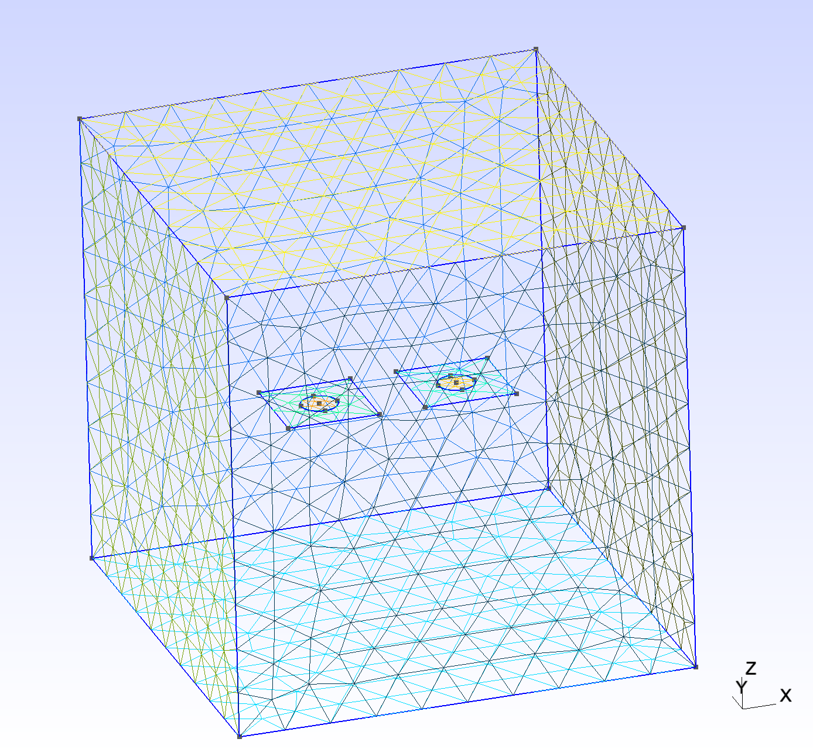
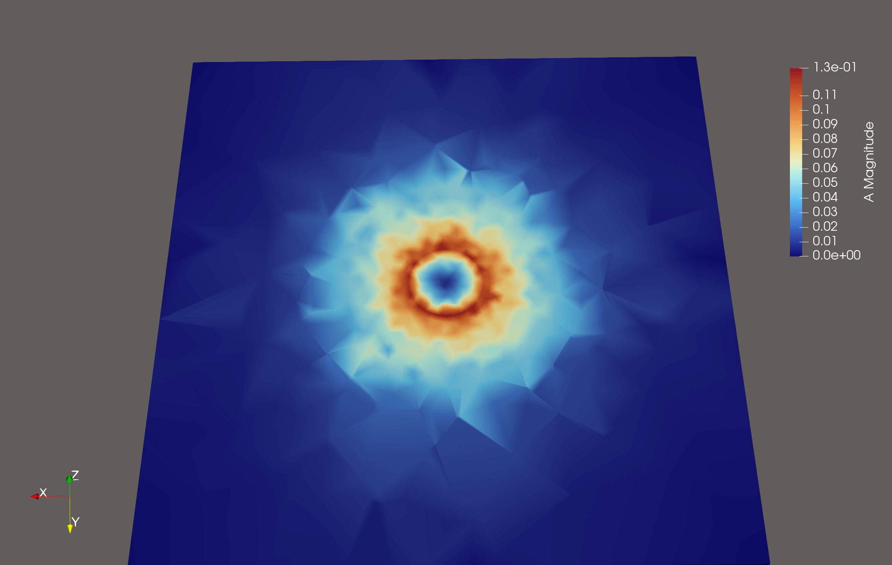
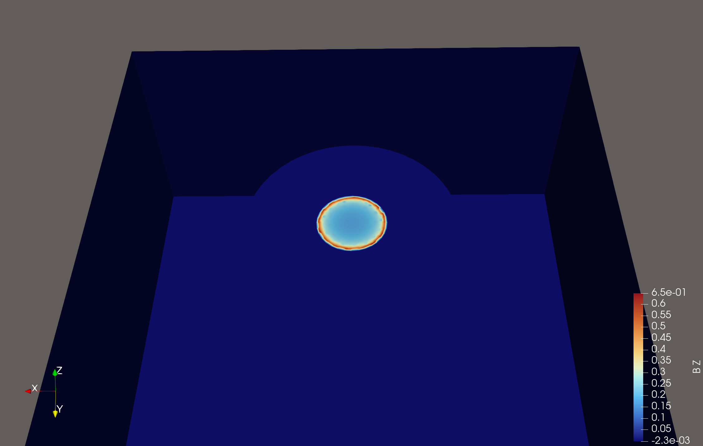
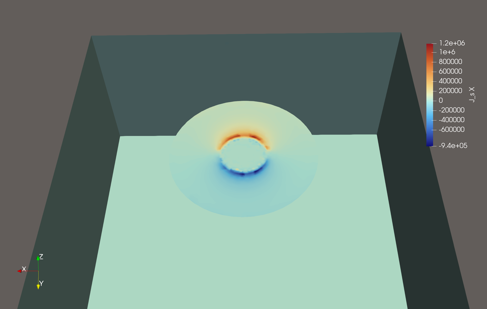
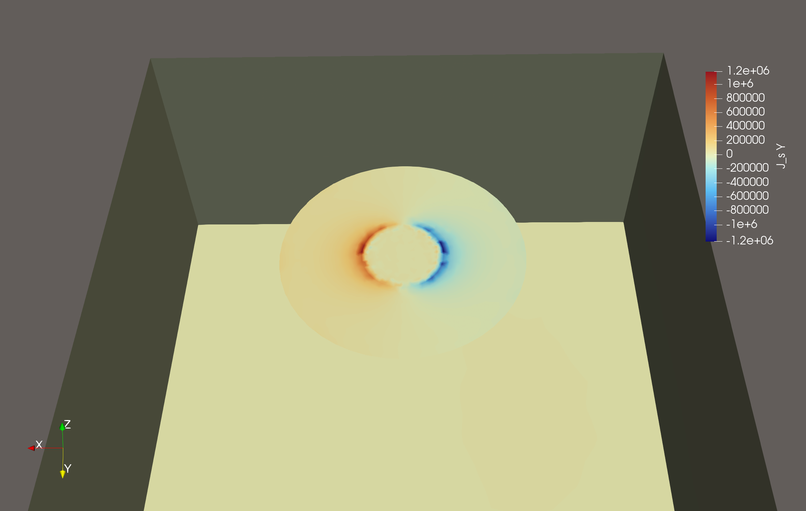
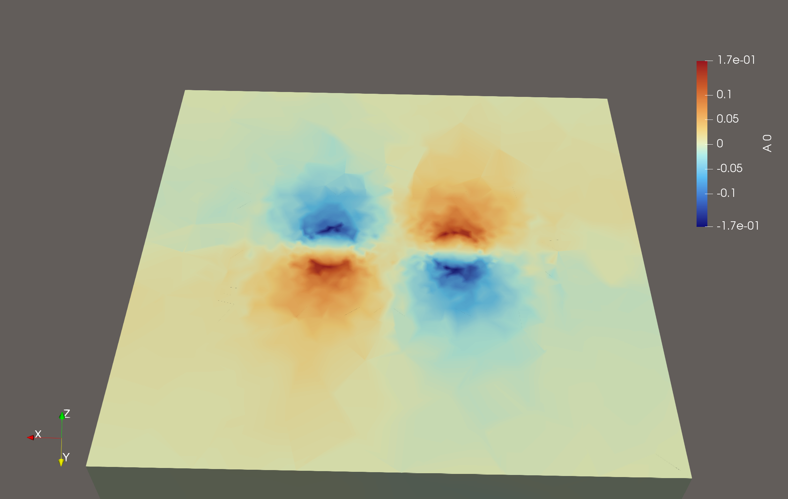
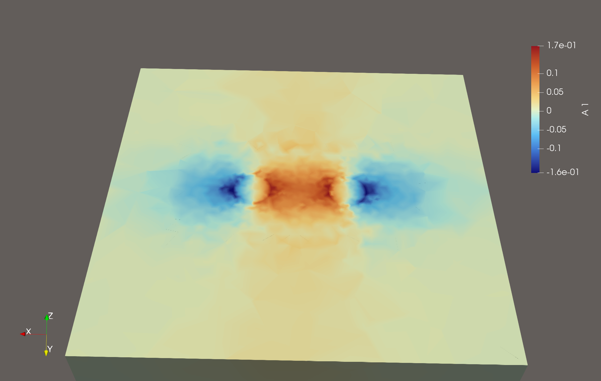
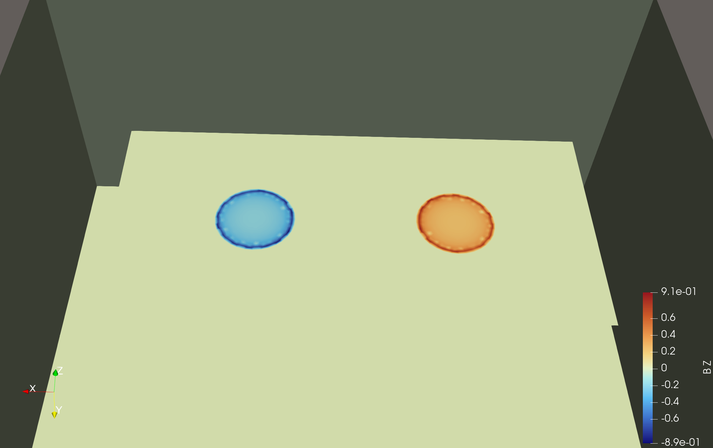
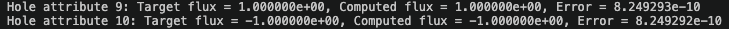

Flux Trapping Analysis
Problem description
This example demonstrates Palace's flux boundary conditions for magnetostatic analysis of magnetic flux trapping in superconducting structures. The problem considers metallic planes containing holes through which fixed amounts of magnetic flux are prescribed, and computes the resulting magnetic field distribution and inductance matrix.
Flux conditions are imposed as integral constraints on the hole perimeters:
\[\oint_h \mathbf{A} \cdot d\boldsymbol{\ell} = \Phi,\]
where $\mathbf{A}$ is the magnetic vector potential and $\Phi$ is the prescribed flux through hole $h$. The solution proceeds in two stages: first, a 2D surface curl problem is solved on the metallic plane to determine the tangential component of $\mathbf{A}$ satisfying the integral constraint; then, this surface field serves as a Dirichlet boundary condition for the full 3D magnetostatic problem.
Four configurations of increasing complexity are provided in the examples/circular_hole/ directory:
- Single hole (
circular_hole.json): A circular hole in a circular metal plate. - Two holes, single flux loop (
double_circular_hole.json): Two holes on one plate with equal and opposite flux prescribed through a single excitation. - Two holes, separate flux loops (
double_circular_hole_multi_flux.json): Two holes on one plate with independent flux loop excitations. - Two holes on separate planes (
double_circular_hole_multi_planes.json): Two holes on spatially separated plates with independent excitations.
All configurations use a mesh length unit of $\mu\text{m}$.
Configuration
Each configuration uses "Problem": {"Type": "Magnetostatic"} and specifies flux loop boundaries via the "FluxLoop" keyword. The shared solver settings are:
"Solver":
{
"Order": 2,
"Device": "CPU",
"Magnetostatic":
{
"Save": 2
},
"Linear":
{
"Type": "AMS",
"KSPType": "CG",
"Tol": 1.0e-8,
"MaxIts": 200
}
}The AMS (Auxiliary-space Maxwell Solver) preconditioner with CG iteration is well-suited for the symmetric positive-definite curl-curl system arising in magnetostatics.
Single hole
The first configuration (circular_hole.json) models a circular metal plate of radius $R = 3\,\mu\text{m}$ with a concentric hole of radius $r = 1\,\mu\text{m}$. A unit nondimensional flux-loop excitation amplitude is prescribed through the hole.
The "FluxLoop" boundary specification is:
"FluxLoop":
[
{
"Index": 1,
"FluxLoopPEC": [8],
"HoleAttributes": [9],
"FluxAmounts": [1.0],
"Direction": "+Z"
}
]The fields have the following meaning:
"FluxLoopPEC": boundary attributes of the metal surface on which the 2D surface curl problem is solved."HoleAttributes": boundary attributes of the hole perimeters where integral constraints are applied."FluxAmounts": prescribed nondimensional flux-loop excitation amplitudes through each hole."Direction": surface normal direction for flux orientation.
Two holes with single flux loop
The second configuration (double_circular_hole.json) uses a rectangular plate with two circular holes separated by $5\,\mu\text{m}$. Both holes belong to a single flux loop excitation with opposite flux values:
"FluxLoop":
[
{
"Index": 1,
"FluxLoopPEC": [8],
"HoleAttributes": [9, 10],
"FluxAmounts": [1.0, -1.0],
"Direction": "+Z"
}
]This configuration models the scenario where equal and opposite flux enters through the two holes, as occurs when a vortex-antivortex pair is trapped in a superconducting film. Since both holes share a single excitation index, the solver computes one self-inductance value for the combined configuration.
Two holes with separate flux loops
The third configuration (double_circular_hole_multi_flux.json) uses the same two-hole geometry but treats each hole as an independent excitation:
"FluxLoop":
[
{
"Index": 1,
"FluxLoopPEC": [8],
"HoleAttributes": [9],
"FluxAmounts": [1.0],
"Direction": [0.0, 0.0, 1.0]
},
{
"Index": 2,
"FluxLoopPEC": [8],
"HoleAttributes": [10],
"FluxAmounts": [1.0],
"Direction": [0.0, 0.0, 1.0]
}
]With two independent excitations, the solver computes the full $2 \times 2$ inductance matrix, including self-inductances $M_{11}$, $M_{22}$ and mutual inductance $M_{12}$. Note that "Direction" accepts either a string shorthand ("+Z") or an explicit numeric array ([0.0, 0.0, 1.0]).
Two holes on separate planes
The fourth configuration (double_circular_hole_multi_planes.json) places each hole on its own spatially separated metal plate, each with a distinct "FluxLoopPEC" attribute:
"FluxLoop":
[
{
"Index": 1,
"FluxLoopPEC": [8],
"HoleAttributes": [9],
"FluxAmounts": [1.0],
"Direction": [0.0, 0.0, 1.0]
},
{
"Index": 2,
"FluxLoopPEC": [10],
"HoleAttributes": [11],
"FluxAmounts": [1.0],
"Direction": [0.0, 0.0, 1.0]
}
]Because the plates are physically separated, this configuration tests the solver's handling of multiple independent metal surfaces and provides a comparison case where inter-hole coupling is expected to be reduced.
Mesh
The meshes are generated using Julia scripts with the Gmsh package, located in the mesh/ subdirectory. For example, the two-hole rectangular plate mesh can be generated with:
julia -e 'include("mesh/sheet_w_two_holes.jl"); generate_sheet_with_two_holes_mesh()'The figures below show the three mesh geometries. From left to right: the single circular hole on a circular plate, the rectangular plate with two holes, and the two spatially separated square plates each containing a hole:



Results
Single hole
For the single-hole configuration, the solver extracts a self-inductance of $M = 1.902\,\text{pH}$. This corresponds to a stored magnetic energy of $E_\text{mag} = Φ₀^2 / (2M) = 1.124 \times 10^{-18}\,\text{J}$ for one physical flux quantum $Φ₀ = 2.0678 \times 10^{-15}\,\text{Wb}$ trapped in the hole.
The figures below show the magnetic vector potential amplitude $|\mathbf{A}|$, its in-plane components $A_x$ and $A_y$, the out-of-plane magnetic field $B_z$, and the surface current components $J_x$ and $J_y$ on the metal surface:






As a verification step, we compute the flux threading through the hole by evaluating the surface integral $\int_h \mathbf{B} \cdot d\mathbf{S}$ over the hole area. The computed flux agrees with the prescribed value to high accuracy:
Two holes with single flux loop
The figures below show the same field quantities for the two-hole geometry with opposing unit flux-loop excitation amplitudes (+1 through one hole, -1 through the other):






Again, the computed flux through each hole matches the prescribed values, confirming the accuracy of the solution:

Two holes with separate flux loops
When independent flux excitations are configured, the solver extracts the full inductance matrix from the stored magnetic energy:
\[R_{ij} = \frac{\mathbf{A}_j^T K \mathbf{A}_i}{\Phi_i \Phi_j}, \qquad M = R^{-1},\]
where $K$ is the curl-curl stiffness matrix, $R$ is the reluctance matrix, and $M$ is the inductance matrix written to terminal-M.csv. The diagonal entries $M_{ii}$ give the self-inductance of each flux loop, which can be used to compute the energy cost of trapping a specified physical flux in hole $i$. The off-diagonal entries $M_{ij}$ ($i \neq j$) give the mutual inductance, which captures how the magnetic field generated by flux in one hole influences the other.
For the two-hole configuration on a shared plate, the computed inductance matrix is:
\[M = \begin{pmatrix} 1.909 & -1.405 \times 10^{-5} \\ -1.405 \times 10^{-5} & 1.909 \end{pmatrix} \text{pH}\]
The equal self-inductances reflect the geometric symmetry of the two holes. The mutual inductance is five orders of magnitude smaller than the self-inductance, indicating that despite being on the same plate, the two holes are magnetically nearly independent at this separation: flux trapped in one hole has negligible influence on the shielding currents around the other.
Two holes on separate planes
When the two holes are placed on spatially separated plates, the inductance matrix is:
\[M = \begin{pmatrix} 1.839 & -1.134 \times 10^{-5}\\ -1.134 \times 10^{-5} & 1.829 \end{pmatrix} \text{pH}\]
The self-inductances are slightly smaller than in the shared-plate case because the surrounding metal no longer extends as far, reducing the flux return path. The mutual inductance is comparable in magnitude to the shared-plate result, which may be counterintuitive. The key reason is that mutual inductance in this geometry is dominated by the far-field magnetic interaction between the two holes, which depends mainly on their center-to-center separation – not on whether they share a plate. The shielding currents flowing around each hole are confined to their own plate and cannot cross over to the other, but the magnetic field itself still permeates the surrounding space and couples the two loops at long range.